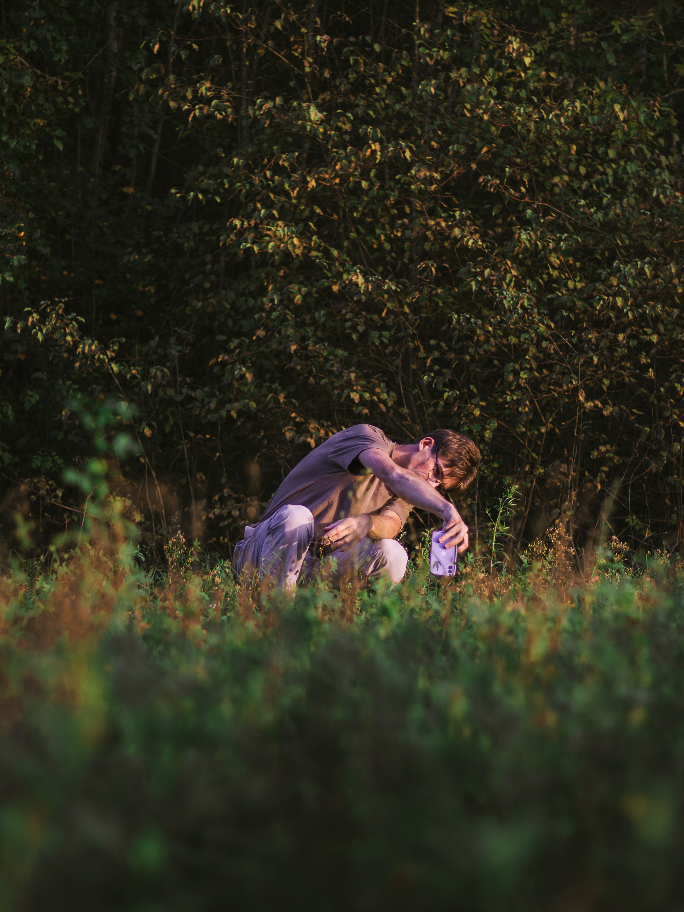
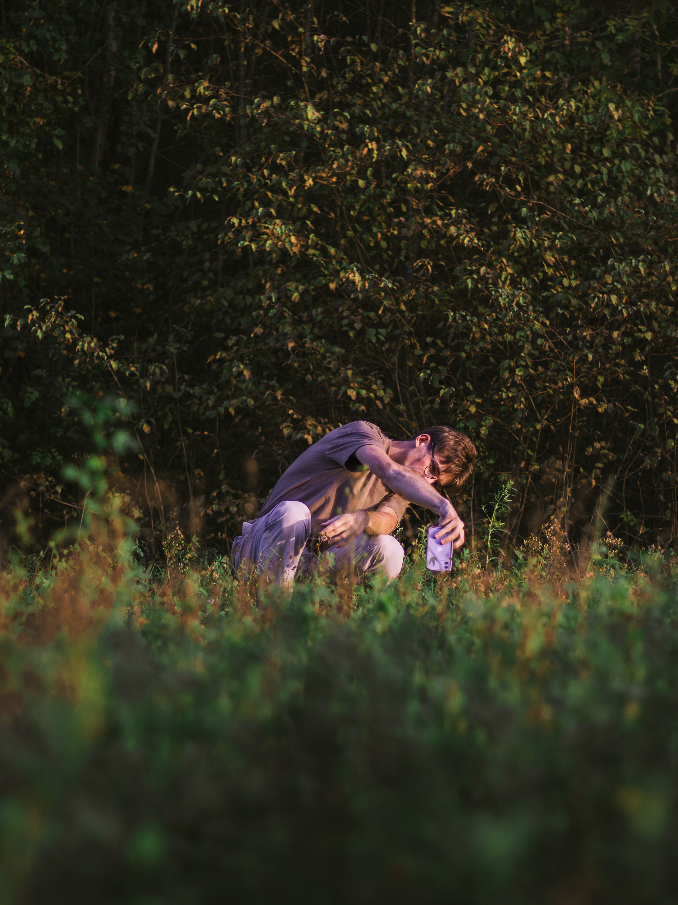

kalm's description
On this page you will learn a lot of informations about me. I show you my description step by step.

INTRODUCTION
So I'm kalm, a 18 years old vagabond who likes to take pictures and travel based in France. They are my passions. I'm looking for put a smile on people's faces everywhere I travel by creating art.


WHERE IT ALL BEGAN
To start my little history, I'm going to tell you about my second and last year of high school, that's when I started to be interest in photography. That same year I bought an iPhone and I began to take photos with it, also, I began to learn HTML and CSS, I saw in it a continuity to photography and simply a way of making art. During the last year, I bought a camera and this is where I really started to learn photographie and art in general.


THE FIRST TRAVEL
In february 2022 I went to a litte island in Greece called Santorini. During this journey, I discovered another livestyle and landscapes different than my little city. I needed to improve myself to adapt my way of taking pictures, it is a real sandbox. I was only a minor and I travelled alone, it allowed me to learn to be autonomous, also more creative and open-minded.

PASSAGE TO BIARRITZ
In 2022, I started an audiovisual school in option engineering technology and equipment operation (audiovisual) but I didn't like it because it didn't have the purpose I wanted. I was to make TV. It was too far from what I wanted : do photography and producing (videos, projects...). So I left this school and I was now entering in my vagabond mode. [I took too much building pictures.]


WINTER 2022-2023
What I call vagabond mode is a lifestyle I took after leaving my school. I needed to change my mind, see my friends. That what I did. During this period, I realised that my photos are much better than the firt photos. I realised that the thing I like the most is to take pictures and work on them. I realised that I'm a way more productive and creative. I discovered both much and little about the world. I want to continue in this direction to create more art again and again. [This page show you a little part of my progression to take pictures.]
 
